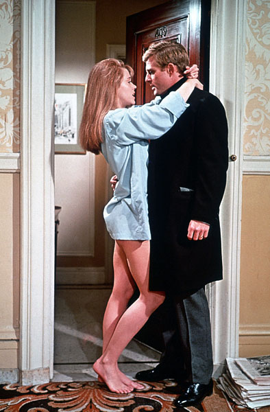

Filmovou rubriku jsem na blogu plánovala už od samého počátku, ale jen málokdy se mi stane, že mě nějaký film zaujme natolik, abych o něm měla chuť něco napsat. Konečně jsem ale dostala ten správný impulz v podobě Bosých nohou v parku. Tento americký snímek z roku 1967 patří už nějaký čas k mým kinematografickým srdcovkám a to jsem ho objevila vlastně dočista náhodou - při žehlení (jak jinak :D) - mezi domácími DVDčky s náhravkami z televize. Do úsměvné situační komedie s báječnou atmosférou let šedesátých se zkrátka nejde nezamilovat a přesvědčila jsem se, že ani po několikáté podívané neomrzí.
Hlavní postavy zde ztvárnili herci skutečně zvučných jmen - Jane Fonda a Robert Redford hrají páreček novomanželů. On je advokát. Ona trochu naivní milující ženuška. Po týdenních líbánkách následuje vpád do reality všedního života v podobě stěhování do prvního hnízdečka lásky :-)…tím má být maličký byt v pátem poschodí bez výtahu. Byteček nevypadá tak idylicky, jak se na první pohled zamilovaným milnecům zdálo - ložnice je maličká, nábytek nepřivezou včas, průvan v obývacím pokoji záhy vysvětluje díra ve stropě a aby toho nebylo málo, přestože je právě v New Yorku únor, topení nefunguje…no nepřipomíná vám to něco :D??? Do příběhu mladých novomanželů Paula a Corie také brzy vstupuje podivínský soused a Coriina konzervativní matka :D. Manželství zažívá opravdový křest ohněm… Bosé nohy v parku nabízí úžasnou podívanou na první novomanželské trable, ale jsou podány s takovým vtipem a nadhledem, že se člověk musí smát od začátku až do konce. Mezi Paulem a Corie to zkrátka správně jiskří, ať už se hádají či milují :-)!

Pověsili byste si je do ložnice ? Já jo :D…
Komu se film bude líbit ? Rozhodně těm, kteří mají rádi staré americké filmy a 60. léta…a taky fanynkám Roberta Redforda :D…A vůbec, všem se vám to bude líbit, uvidíte!!! Bosé nohy v parku jsou totiž hlavně o lásce a o tom, že ani to nejšťastnější manželství se občas neobejde bez hádek :-)…
Komentáře (4)
Komentáře jsou uzavřené.